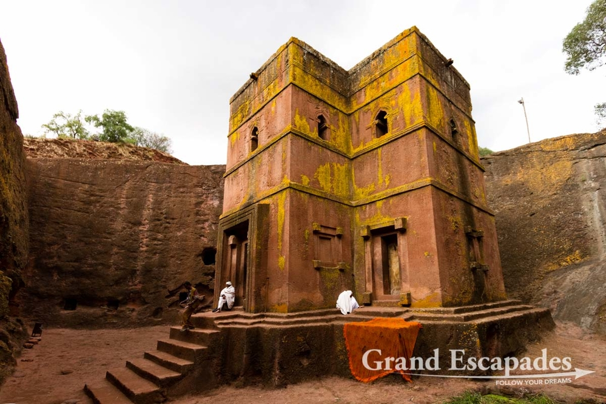

my favorite city
My favorite city is Bahir Dar city in Ethiopia. Bahir Dar is a clean and well-maintained city by African city standards. It is popular with national tourists for its lake and comfortable climate. It has become part of the northern tourist loop for its access to historic monasteries and as a jumping off point for Blue Nile Falls and Gondar. This is bahir dar city photo
My favorite historical heritage Church
Lalibela historical heritage rock Church, is one of my favorite historica heritage church. Lalibela is located in the Semien Wollo Zone of the Amhara region and is the main town in Lasta Woreda. There are 11 rock-cut churches at Lalibela, the most spectacular of which is Bet Giorgis (St. George's). Located on the western side of the cluster of churches, it is cut 40 feet down and its roof forms the shape of a Greek cross.
Ethiopian Instrumental Classic Music
Listening this classical music, is so good while you're studing.